Earlier chapters covered the properties of a single pulse and the mechanics of triggering, gating, delaying, and clocking. Real instruments rarely deal in single pulses on a single line. They run several channels off one clock, each with its own mode, voltage, and timing, and they have to decide how those channels relate to a shared trigger and to each other. This chapter covers channels and output modes, the choice between an internal and an external reference, and the channel-by-channel setup that gives a multi-channel pulse generator its flexibility.
A multi-channel timing system provides several channels synchronized to a common clock. In a conventional benchtop pulse generator, each channel is represented by its own output connector. Other architectures, such as VXI, NIM, board-level OEM cards, or 19-inch rack mounts, also use one output connector per channel. The channel count is one of the first things that separates models. The portable Model 525 carries 6 channels. The bench Model 577 scales to 8. The rack-mount Model 588B reaches 24 channels in a 2U chassis, and the femtosecond-class Model 745T-20C provides 20. Whatever the form factor, the principle is the same: every channel draws its timing from one shared reference, so the outputs hold a fixed relationship to each other.
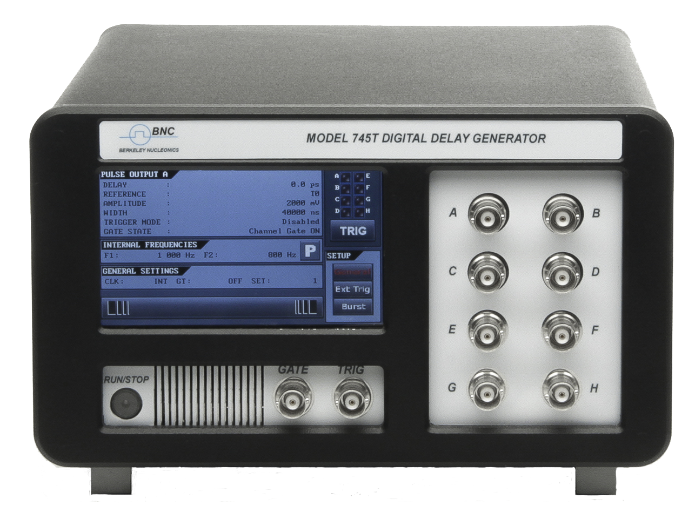
Channels are usually independently selectable for properties such as on or off, output voltage, and pulse mode. Common output modes include:
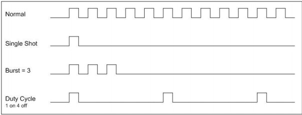
More advanced systems add further features, such as:
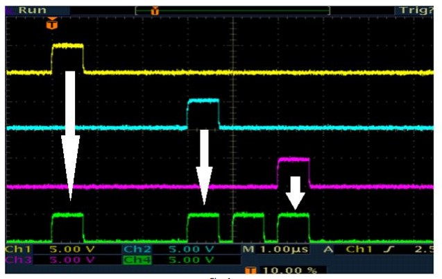
Because every channel is counted against the same clock, a single trigger can launch a coordinated set of edges spread across the period. The figure below shows the idea: one clock, one trigger, and four channels each placed at its own delay and width.
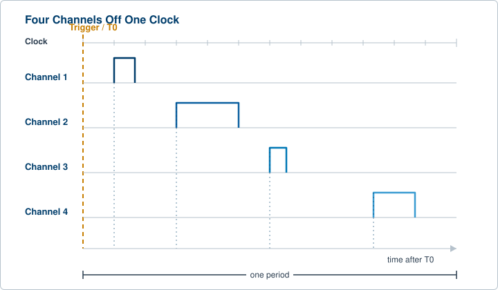
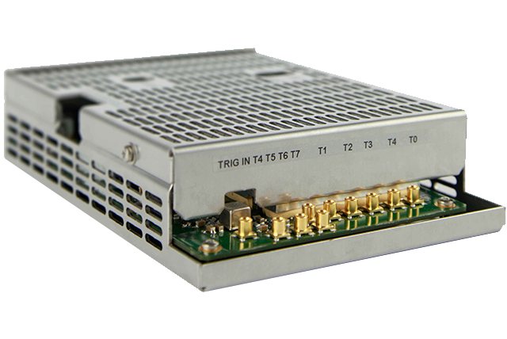
Some systems let system modes and channel modes operate concurrently. A system mode sets overall timing parameters that take precedence over individual channel modes. The two figures below show the same instrument first in normal system operation, then with a system-level parameter applied.
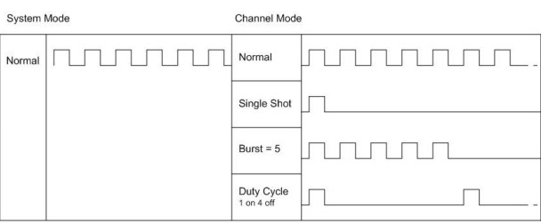
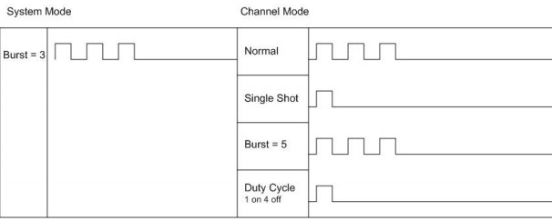
The lesson is that a system mode sits above the channels. When it is set, it can constrain or override what the individual channels would otherwise do. A system burst, for example, limits the triggers that ever reach the channel layer, so every channel responds to the new envelope at once.
A timing system depends on a master clock, the reference from which all of its precision timing attributes derive. The clock is either internal to the system or external, supplied by another device. An internal clock is typically an oscillator with a well-defined frequency. It provides the start pulse for each channel, and each channel represents an independent event linked to that internal reference. Chapter 3 covered what sits inside that reference, from a standard crystal to an OCXO, a rubidium standard, or a GPS-disciplined oscillator, and why the choice sets a ceiling on every timing number the instrument can produce.
External references are usually external clocks or oscillators running at one of several possible frequencies. They feed a signal to the master timing system, often through a front panel connector, and the internal phase-locked loop locks to that external signal. Locking to a shared reference, commonly 10 MHz, is how several instruments are made to agree on the meaning of one second, which matters when a Model 577 on one bench must hold phase with a Model 588B in a rack.
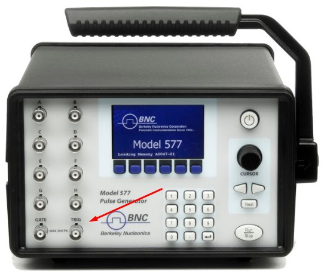
An external reference also provides a trigger input that the system must interpret correctly. The level, or voltage, of the incoming trigger has to meet the system's criteria for a trigger. If the threshold is 1 V and the external source provides only a 100 mV pulse, the system will not trigger. Pulse generators that accept an external trigger typically let triggering occur on either the leading or the falling edge of the trigger pulse, a choice Chapter 3 treated as slope selection. In the diagram that follows, the top two circuits trigger on the leading edge, generating T0. The diagram also shows a trigger pulse that does not meet the threshold, so no trigger is generated.
Red line: trigger threshold. Blue line: system baseline. Green line: trigger pulse. Where the green pulse fails to cross the red threshold, the system does not trigger.
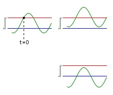
Modern pulse generators allow a range of programming and output options on a channel-by-channel basis. You might want different output voltages on different channels. You might need one channel to produce much wider pulses than the rest. You might need one channel to wait five pulses while the others fire. These software-controlled settings can be configured from the front panel or from a software GUI. A few typical examples follow.
To generate a stream of pulses that runs on for n pulses and off for m pulses, a typical setup includes:
Burst mode generates a burst of pulses every time the system is triggered, for an individual channel. A typical setup selects a channel, sets its delay and width, and sets the number of pulses to produce in the burst. Keep the two burst rates distinct: the rate of pulses within the burst, and the rate at which whole bursts repeat.
Multiplex is a configuration tool that feeds several channels into a multiplexer, typically output on one connector as a complex timing sequence. It is worth noting that mapping more than one channel to a single physical output is a classic source of timing conflict. When two channels are asked for the same slot on the shared output, the result is an overlap condition, which Chapter 5 covers in detail.
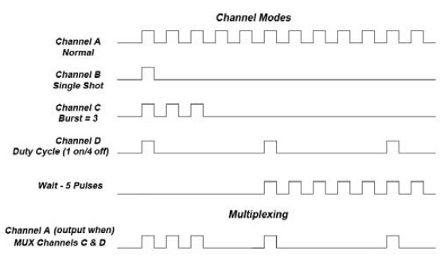
A Gate In function lets a timing system use a gate pulse to enable or disable triggering, and each channel can be gated independently. A typical setup selects a channel, adds a gate input, and selects Active High or Active Low to enable pulse inhibit. In the pulse inhibit method, the gate prevents the channel from being triggered by its own trigger source pulse, while any pulse already underway is allowed to finish cleanly. Chapter 3 covered the fundamentals here, including the difference between pulse inhibit and output inhibit and why gate polarity must be set deliberately. The point worth repeating on a multi-channel instrument is that gating can act on one channel, on a selected group, or on all outputs at once, which makes a single gate input the fastest way to silence the whole instrument during a fault or a setup change.
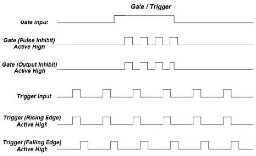
The special functions of a multi-channel pulse generator build on the modes already described rather than introducing new physics. Burst and duty cycle return here at the instrument level. Burst produces a preset number of pulses for each trigger, then inhibits the source until the next trigger. Duty cycle produces a fixed ratio of pulse to no pulse, expressed either as on and off pulse counts or as a percentage of the period. Applied at the system level, both functions shape every channel at once, which is the practical reason they sit above the per-channel settings.
A shot counter tracks how many output pulses, or shots, the instrument has produced. It is useful in two everyday situations. When a test calls for a known total number of pulses, the counter enforces the count instead of relying on a stopwatch. When a sequence must run to completion, the counter confirms that it did. On a multi-channel system the counter becomes a coordination aid as much as a tally, since it gives one trusted number for a run that spans many channels and modes.
These functions are deliberately described here in general terms. Exact parameter ranges, the wording on the front panel, and the precise interaction between a system mode and the channel modes beneath it vary by model, so confirm them against the current datasheet and manual for the instrument on your bench, whether that is a 6-channel Model 525, an 8-channel Model 577, a 24-channel Model 588B, or a 20-channel Model 745T-20C.
Check your understanding. Five quick questions on output modes, multiplex, system versus channel modes, channel gating, and the shot counter.